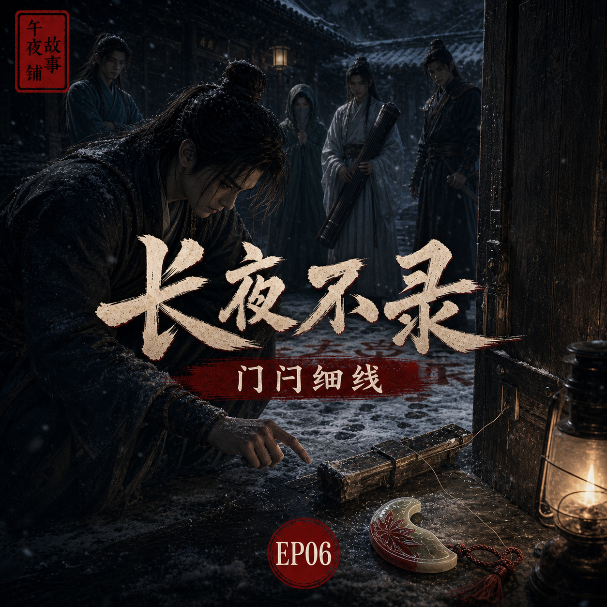

长夜不录：门闩细线
雪地血字未干，沈砚却先回到门前，因为真正会说话的，往往不是死人

简介
断云驿院中出现血字“长夜不录”，众人惊惧，以为凶手在门外挑衅。沈砚却没有追出雪地，而是重新回到柳照寒房门前。他发现门闩断口之外，还有一道极细的勒痕。所谓从内反锁，也许从一开始就是给活人看的假象。
标签
- 古风
- 刑侦
- 武侠
- 悬疑
- 爱情
- 江湖
- 命案
雪地血字未干，沈砚却先回到门前，因为真正会说话的，往往不是死人

断云驿院中出现血字“长夜不录”，众人惊惧，以为凶手在门外挑衅。沈砚却没有追出雪地，而是重新回到柳照寒房门前。他发现门闩断口之外，还有一道极细的勒痕。所谓从内反锁，也许从一开始就是给活人看的假象。